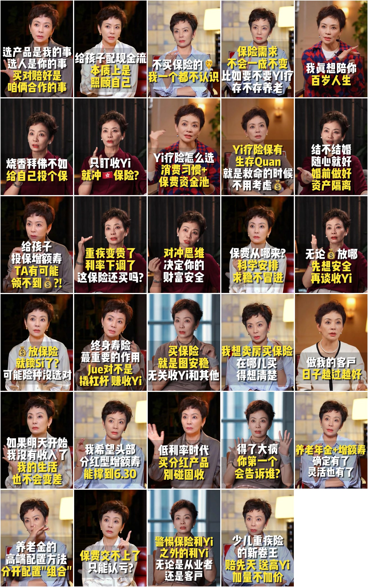
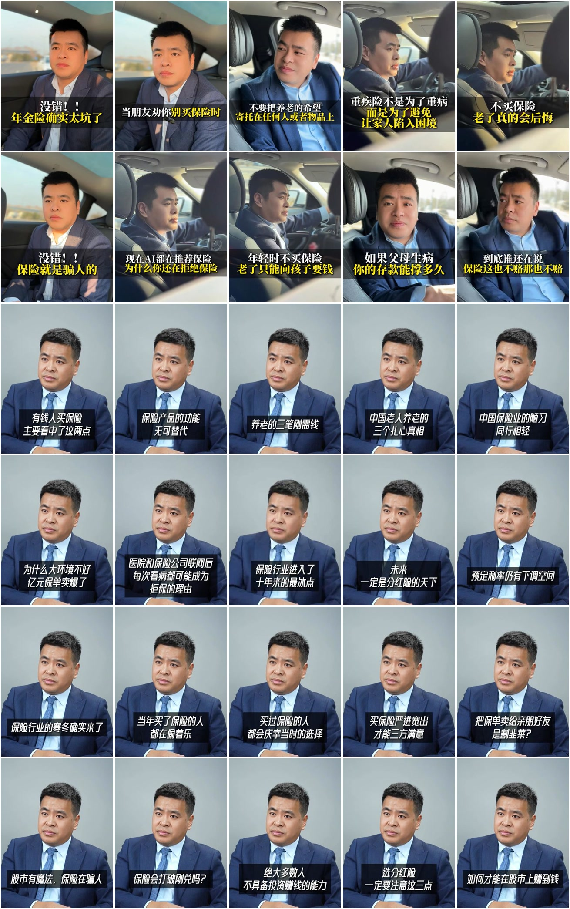
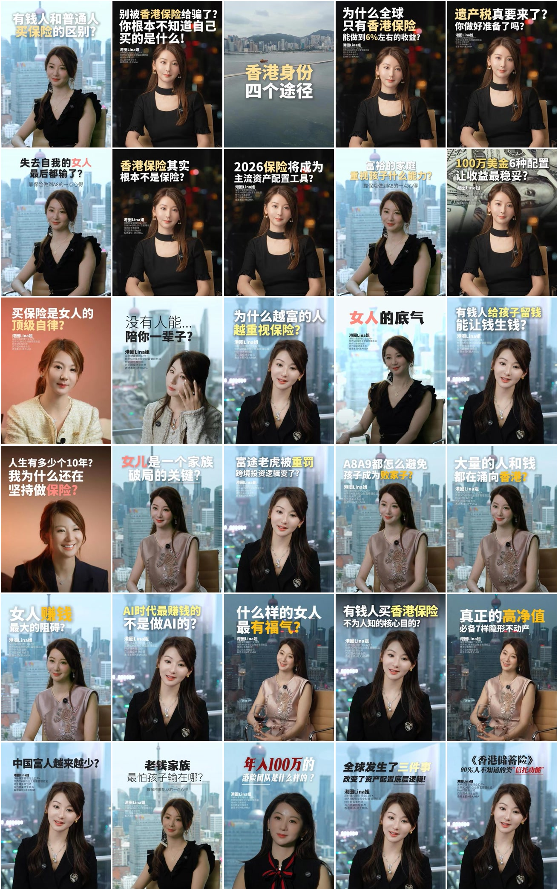

这次怎么判定“一个版式”
先看每个账号最近 30 条封面，再用代表视频验证动态字幕、B-roll 和剪辑。数据表现与视觉质量分开记录，不再用一条高赞视频代表整个账号。
稳定版式最近样本中至少重复 3 次。
制作变体标题/字幕母版相同，只改变灯光、背景、服装或景别。
独立母版场景、构图、标题系统、字幕和剪辑至少三项同步变化。
实验版不足 3 次，保留观察但不纳入稳定体系。
01保险职业IP
有毒有料陈葭怡
3.4万 粉丝11万 获赞3 稳定版式
同一标题母版，分化出 3 套稳定灯光场景；动效强度随场景变化。

稳定版式
15 / 29深色幕布暖侧光
- 场景与人物
- 黑色幕布、红皮椅、暖侧光，中近景居中或轻偏侧。
- 标题与字幕
- 顶部白黄粗黑体常驻；底部语义块字幕，白黄高亮并带黑描边。
- 动效与插入
- 字幕以硬切为主，少量弹入、上滑和闪光；主样本无 B-roll，约 7.5–12.7 次切镜/分钟。
稳定版式
11 / 29暖色家居漫射光
- 场景与人物
- 暖灯、浅色家居和更明显的背景景深，人物仍保持固定中景。
- 标题与字幕
- 沿用同一顶部标题和底部字幕系统，靠服装、手势和暖色背景换气质。
- 动效与插入
- 关键词图标弹入、三条要点上滑、星芒与气泡强调；样本出现约 12 次图形插入。
稳定版式
3 / 29蓝灰窗景冷调光
- 场景与人物
- 蓝灰窗景、冷调漫射光，人物与暖色版保持相同构图。
- 标题与字幕
- 标题系统不变，字幕加入彩块、箭头、爆炸框与双色强调。
- 动效与插入
- 硬切字幕更密，出现竖屏插视频、彩块拼接与局部数码放大，约 12.2 次切镜/分钟。
02保险职业IP
微易老周
1.6万 粉丝13.6万 获赞2 稳定版式
两套真正独立的母版并行：舞台负责势能，坐谈负责解释。
03保险相关系列
财商-黄永鳌
4.1万 粉丝23.1万 获赞2 稳定版式
一套极稳定的暖色近景母版，正装与衬衫是两批制作变体。
04保险职业IP
年金一哥 | 黄嘉祥
1.9万 粉丝7.9万 获赞2 稳定版式
车内真实感与灰背景权威感两套母版，文字包装也随场景重做。

05跨赛道视觉参考
谢员外观世界
223.2万 粉丝1807.9万 获赞1 稳定版式
30 条近作几乎复用同一张杂志封面母版，统一度最高。
06跨赛道视觉参考
董可人
49.7万 粉丝419.9万 获赞1 稳定版式
一套强识别的信息卡母版，靠中央黑带和白蓝大字完成系列化。
07保险职业IP
🇭🇰港圈Lina姐
5933 粉丝2.5万 获赞2 稳定版式2 实验版
明亮天际线是主母版，深色散景承担重信息；橙色棚拍仍在试验期。

稳定版式
21 / 30香港天际线明亮口播
- 场景与人物
- 高楼窗景、明亮柔光、人物中景居中或轻偏侧，城市即身份背景。
- 标题与字幕
- 顶部黑/白/黄标题，左下资质信息栏，中下部白黄字幕。
- 动效与插入
- 固定机位、字幕硬切、无 B-roll或极少，样本约 0–2.8 次切镜/分钟。
稳定版式
6 / 30深色散景棚拍口播
- 场景与人物
- 暖色面光配深色散景，黑色服装与金色文字形成高对比。
- 标题与字幕
- 顶部黄白标题常驻，底部白金字幕按整句替换。
- 动效与插入
- 约每 20–30 秒插活动照、数据图、香港城市或街景，全屏硬切；约 6.1 次切镜/分钟。
实验版
2 / 30暖橙纯色棚拍
- 场景与人物
- 暖橙纯色背景与浅色服装，气质更柔和。
- 标题与字幕
- 左上标题与底部字幕并存，局部双语排版。
- 动效与插入
- 粒子闪入、上滑和硬切三种文字动效；约 5–6 段全屏 B-roll，尚未达到稳定复用阈值。
实验版
1 / 30香港身份风景卡
- 场景与人物
- 全屏香港海港风景，无人物。
- 标题与字幕
- 中央金白两色大标题。
- 动效与插入
- 仅出现一次，先作为栏目过场实验，不计稳定母版。
08跨赛道视觉参考
芷柠说
16.7万 粉丝127.8万 获赞3 稳定版式1 实验版
三套成熟母版分别承载情绪、哲思与观点，场景和字幕动效同步变化。
稳定版式
15 / 30夜景窗边情绪访谈
- 场景与人物
- 深蓝夜景窗边，人物偏右，中近景留出左侧文字空间。
- 标题与字幕
- 细白字、低对比、留白大，标题和字幕常在左上/中部。
- 动效与插入
- 单镜头慢节奏，字幕静态出现后硬切，无 B-roll，约 0–2.1 次切镜/分钟。
稳定版式
9 / 30暖色东方室内访谈
- 场景与人物
- 暖木色屏风、器物和烛光，人物居中，柔光塑造东方质感。
- 标题与字幕
- 金色书法标题配白色轻字字幕。
- 动效与插入
- 字幕 0.3 秒淡入淡出；穿插山雾、星系、秋林等 1–2 秒意象 B-roll，约 15 次切镜/分钟。
稳定版式
5 / 30明亮灰蓝棚拍观点卡
- 场景与人物
- 灰蓝高调柔光、人物居中，左侧陈设与身份信息形成平衡。
- 标题与字幕
- 顶部固定双行标题，中部深灰/白描字幕，左侧竖向身份栏。
- 动效与插入
- 字幕整句硬切、无 B-roll，约 3.1 次切镜/分钟。
实验版
1 / 30户外网球生活切片
- 场景与人物
- 户外球场、全身动作与自然光。
- 标题与字幕
- 大号白字叠在人物周围。
- 动效与插入
- 仅出现一次，属于生活方式实验，不计稳定母版。